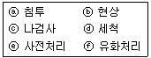
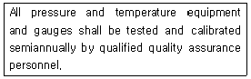
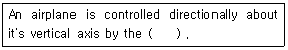

항공기관정비기능사 (2002-10-06 기출문제)
1과목: 비행원리
1. 비행기 날개의 가로세로비(Aspect ratio) A를 올바르게 표현한 것은? (단, S: 날개면적, b: 날개길이, C: 시위)
- A = b/S
- A = b2/S
- A = bC/S
- A = C/S
(정답률: 82%)

2. 비행기에 확실한 실속의 징조가 있은 다음 기수가 급격히 내려간 후에 회복되는 실속(stall)은?
- 부분실속(partial stall)
- 정상실속(normal stall)
- 완전실속(complete stall)
- 연속실속(continuous stall)
(정답률: 47%)
3. 헬리콥터 회전날개 깃의 면적을 정하는데 있어서 고려해야 할 사항이 아닌 것은?
- 무게
- 비용
- 정지비행시의 성능
- 재질
(정답률: 30%)
4. 공기의 밀도 단위가 ㎏-sec2/m4으로 주어질 때 ㎏단위의 의미는?
- 질량
- 중량
- 비중량
- 비중
(정답률: 62%)
5. 공기보다 가벼운 항공기는?
- 비행선
- 활공기
- 비행기
- 헬리콥터
(정답률: 69%)
6. 날개에 발생하는 표면마찰 항력이 20㎏f, 압력항력이 50㎏f이며, 유도항력이 60㎏f일 때 형상항력 Dp와 전항력 D는 각각 얼마인가?
- Dp = 70㎏f,D = 110㎏f
- Dp = 80㎏f, D = 110㎏f
- Dp = 70㎏f,D = 130㎏f
- Dp = 80㎏f, D = 130㎏f
(정답률: 55%)
7. 실제유체와 이상유체의 가장 큰 차이는?
- 운동에너지
- 점성
- 유체의 압력
- 유체의 속도
(정답률: 67%)
8. 비행기의 속도가 음속 가까이로 증가하면 조종력에 역작용을 일으키는 현상은?
- 더치롤(Dutch roll)
- 턱언더(Tuck under)
- 피치업(Pitch up)
- 드래그 슈트(Drag chute)
(정답률: 60%)
9. 깃 테이퍼(blade taper)를 크게 하는 이유중 가장 적합한 것은?
- 정지 비행성능을 좋게하기 위해
- 제작 비용을 절약하기 위해
- 소음을 줄이기 위해
- 설계를 용이하게 하기위해
(정답률: 78%)
10. 비행기가 정적중립(static neutral)인 상태일 때는?
- 받음각이 변화된 후 원래의 평형상태로 돌아간다.
- 교란을 받게 되면 평형상태로 되돌아 오지 않는다.
- 반대 방향으로의 조종력이 작용되면 원래의 평형상태로 되돌아 간다.
- 비행기의 자세와 속도를 변화시켜 평형을 유지시킨다
(정답률: 42%)
11. 활공거리를 가장 길게 하려면?
- 날개 길이를 짧게 한다.
- 형상항력을 작게하고 유도항력을 크게 한다.
- 가능하면 양력계수에 비하여 항력계수가 크도록 한다
- 양항비를 크게 한다.
(정답률: 73%)
12. 비행기가 360 km/h의 속도로 비행하고 있다. 이때, 상승각이 6° 라면, 상승률은 얼마인가? (단,sin6° =0.10, cos6° =0.99, tan6° =0.11 로 한다.)
- 3.6 m/s
- 9.9 m/s
- 10 m/s
- 11 m/s
(정답률: 30%)
13. 1500kgf 의 추력으로 속도 360km/h 로 나는 비행기가 있다. 이 비행기의 이용마력은?
- 7,200 마력
- 2,000 마력
- 120 마력
- 312 마력
(정답률: 46%)
14. 조파 항력과 가장 밀접한 관계를 가지고 있는 것은?
- 시위선
- 비 압축성 흐름
- 아음속 흐름
- 충격파
(정답률: 76%)
15. 승강키(elevator)는?
- 수직축(vertical axis)을 중심으로 한 비행기의 운동(yawing), 즉 좌우 방향전환에 사용하는 것이 주 목적이다.
- 비행기의 가로축(lateral axis)을 중심으로 한 운동(pitching)을 조종하는데 주로 사용되는 조종면이다.
- 비행기의 세로축(longitudinal axis)을 중심으로 한 운동(rolling)을 조종하는데 주로 사용되는 조종면이다.
- 이륙이나 착륙시 비행기의 양력을 증가시켜 주는데 목적이 있다.
(정답률: 70%)
16. 감항증명이 있는 항공기의 중요한 장비품은 안전성 확보를 위한 예비품 증명을 받을 수 있다. 예비품 증명을 받아야 할 대상이 아닌 것은?
- 기관(ENGINE)
- 프로펠러
- 계기
- 연료필터
(정답률: 60%)
17. 항공기 정비의 분류로 가장 올바른 것은?
- 보수, 점검, 조절
- 보수, 수리, 점검
- 보수, 검사, 수리
- 보수, 수리, 개조
(정답률: 55%)
18. 고장이 난 부품이나 사용 수명이 다 되어 장탈한 부품으로, 이러한 부품에는 어떤 색깔의 표찰이 붙어 있는가?
- 파랑색
- 초록색
- 노랑색
- 빨간색
(정답률: 25%)
19. 두께 게이지와 용도가 비슷한 게이지를 무엇이라 하는가?
- R게이지
- 핑거 게이지
- 필러 게이지
- 나이프 에지 게이지
(정답률: 84%)
20. 인치(inch)식 버니어 캘리퍼스에 대한 설명중 틀린 것은?
- 최소 측정값이 1/128in, 1/1000in인 2종류가 있다.
- 인치식 버니어 캘리퍼스의 원리는 미터식 버니어 캘리퍼스 원리와 완전히 다르다.
- 최소측정값이 1/128in인 경우7/16in를 8등분 하였다.
- 최소측정값이 1/1000in인 경우 0.6을 25등분 하였다.
(정답률: 62%)
2과목: 항공기정비
21. 0.001 암페어(Ampere)를 의미하는 것은?
- 밀리 암페어(Milliampere)
- 마이크로 암페어(Microampere)
- 메가 암페어(Megaampere)
- 킬로 암페어(Kiloampere)
(정답률: 57%)
22. AN 310 규격번호는 어떤 너트인가?
- 고정너트
- 자동고정 너트
- 캐슬 너트
- 평 너트
(정답률: 60%)
23. 리벳(Rivet)의 부품번호 AN 470 AD 3-5에서 AD는 무엇을 뜻하는가?
- 리벳의 머리모양
- 리벳의 직경
- 리벳의 재질 기호
- 리벳의 열처리 기호
(정답률: 59%)
24. 세이크 프루프 고정 와셔(SHAKE PROOF LOCK WASHER)가 사용되는 곳으로 가장 올바른 것은?
- 회전을 방지하기 위하여 고정 와셔가 필요한 곳에 사용한다.
- 고열에 잘 견딜 수 있고 또한 심한진동에도 안전하게 사용할 수 있음으로 조절계통(CONTROL SYS)및 ENGINE 계통에 사용한다.
- 기체구조 접합물에 많이 사용된다.
- 기체외피와 구조물의 접착에 일반적으로 사용한다.
(정답률: 63%)
25. 시각 점검(visual check)에 대한 내용으로 가장 올바른 것은?
- 상태를 점검하는 것으로서 보조장비를 사용하여 점검하는 것을 말한다.
- 특수장비를 사용하여 상태를 점검하는 것이다.
- 상태를 점검하는 것으로서 보조장비를 사용하지 않고 다만 육안으로 점검하는 것이다.
- 여러 방법을 조합하여 상태를 점검하는 것이다.
(정답률: 79%)
26. 다음은 형광침투 검사의 순서이다. 가장 올바른 것은?

- ⓔ-ⓕ-ⓑ-ⓐ-ⓓ-ⓒ
- ⓔ-ⓐ-ⓕ-ⓓ-ⓑ-ⓒ
- ⓔ-ⓓ-ⓐ-ⓑ-ⓕ-ⓒ
- ⓔ-ⓐ-ⓑ-ⓒ-ⓕ-ⓓ
(정답률: 41%)
27. 자분탐상 검사에서 재료의 보자성(Retentivity)이란?
- 쉽게 자화되려는 성질
- 부품의 탈자에 소요되는 시간
- 잔류자장을 유지하려는 성질
- 부품에서 자장의 깊이
(정답률: 52%)
28. 고압가스 취급시의 안전사항 중 가장 올바른 것은?
- 산소는 가연성 물질이 아니어서 취급장소에 소화기의 비치는 필요치 않다.
- 히드라진은 인체에 무해하지만 취급에 별도의 안전 사항은 지킨다.
- 히드라진은 증발성이 강하므로 피부에 닿아도 상관 없다.
- 액체산소를 취급할 때는 장갑, 앞치마 및 고무장화 등을 착용해야 한다.
(정답률: 87%)
29. 금속 자체에서 일어나는 화재로서 항공기 표피에 빨갛게 일어나는 현상등을 무슨 화재라 하는가?
- A급화재
- B급화재
- C급화재
- D급화재
(정답률: 82%)
30. 항공기의 동계취급 중 얼지 않게 하기 위하여 사용되는 부동액은 어느 것인가?
- 알코올(ALCOHOL)
- 글리콜(GLYCOL)
- 에틸렌(ETHYLENE)
- 가솔린(GASOLINE)
(정답률: 37%)
31. 접지의 목적에 대한 설명으로 가장 올바른 것은?
- 정전기의 축적을 막는다.
- 정전기를 축적 시킨다.
- 작동이 필요치 않은 전기기기 수리시 행한다.
- 항공기 자체에 접지 장치가 있으면 별도의 접지선은 쓸 필요가 없다.
(정답률: 75%)
32. 다음 문장중 semiannually 의 내용으로 올바른 것은?

- 매 분기마다
- 매 년
- 시기에 맞게
- 반년마다
(정답률: 60%)
33. 다음 ( )안에 알맞는 말은?

- rudder
- elevator
- ailerons
- flap
(정답률: 52%)
34. 정확한 토크로 조이기 위한 방법으로 가장 적당한 것은?
- 나사산에 기름을 바르고 조인다.
- 보통 너트쪽에 조임을 원칙으로 한다.
- 지시서에 규정된 조임값에 상관없이 조인다.
- 익스텬션바를 사용시 토크치의 조절은 필요치가 않다.
(정답률: 67%)
35. 항공기 외부세척의 종류중 틀리는 것은?
- 습식 세척
- 건식 세척
- 광택작업
- 쇼트 브라스트 세척
(정답률: 56%)
36. 피스톤 헤드의 모양이 아닌 것은?
- 평형
- 원형
- 오목형
- 돔형
(정답률: 44%)
37. 가스터빈 기관에서 서어지 블리이드 밸브(surge bleed valve)의 주된 역할은?
- 압축기의 실속을 방지한다.
- 윤활계통의 압력을 조절한다.
- 분사연료의 유입을 조절한다.
- 램 압력을 조절한다.
(정답률: 38%)
38. 실린더의 행정체적이 960㎝3이고 연소실 체적이 160㎝3인 실린더의 압축비는?
- 6
- 7
- 8
- 9
(정답률: 22%)
39. 실린더의 압축시험 절차와 관계 없는 것은?
- 각 실린더의 점화 플러그를 한개씩 장탈한다.
- 프로펠러를 회전시켜 기관의 작동이 원활한가 확인한다.
- 실린더의 압축시험은 저속 운전을 시키면서 실시한다
- 실린더의 압축시험은 피스톤이 압축 상사점에 위치할 때의 압력을 측정한다.
(정답률: 41%)
40. 기관을 재생하기 위하여 오버홀(Overhaul)공장으로 이송 되었을 때, 그곳에서 제일 먼저 실시하는 검사는?
- 수령검사
- 이송검사
- 재생검사
- 내부검사
(정답률: 61%)
3과목: 항공기관
41. 왕복기관 작동시 윤활유의 압력이 낮게 지시한다. 고장의 원인으로 맞지 않는 것은?
- 윤활유 펌프가 고장이다.
- 윤활유의 양이 부족하다.
- 윤활유 여과기에 이물질이 끼어있다.
- 릴리이프 밸브에 이물질이 끼어있다.
(정답률: 34%)
42. 가스터빈 기관의 공기흡입 부분의 압력 회복점에 대한 설명으로 틀린 것은?
- 압축기 입구의 정압상승이 도관안에서 마찰로 인한 압력 강하와 같아지는 항공기 속도를 말한다.
- 압축기 입구의 전압이 대기압과 같아지는 항공기 속도를 말한다.
- 공기흡입 도관의 성능을 좌우하는 요소이다.
- 압력 회복점이 높을 수록 좋은 공기 흡입도관 이다.
(정답률: 30%)
43. 가스터빈 기관으로 흡입되는 단위공기 유량에 대한 진추력은?
- 총추력
- 부분추력
- 비추력
- 단위추력
(정답률: 47%)
44. 가스터빈 기관에서 점화에 사용되는 이그나이터에 대한 설명으로 틀리는 것은?
- 왕복기관 스파크 플러그보다 큰 에너지를 공급 받는다.
- 왕복기관 스파크 플러그보다 높은 압력에서 작동된다.
- 왕복기관 스파크 플러그보다 전극사이 간극이 크다.
- 애뉼러 간극형과 컨스트레인 간극형이 있다.
(정답률: 22%)
45. TSFC(thrust specific fuel consumption)는 다음 중 무엇을 뜻 하는가?
- 추력 중량비
- 추력 비연료 소비율
- 추력 마력
- 추력 열효율
(정답률: 79%)
46. TURBINE NOZZLE (NOZZLE DIAPHRAGM)의 주 목적은?
- 뜨거운 가스의 압력을 증가시킨다.
- 터빈휠로 가스를 분배시킨다.
- 방향을 변화시켜서 가스의 온도를 떨어뜨린다.
- 가스의 속도를 증가시키고 바켓트에 올바른 각도로 가스의 흐름을 인가한다.
(정답률: 57%)
47. 압축기의 실속현상을 방지하는 방법에 해당되는 것으로 이루어진 것은?
- 단축식 구조, 가변 고정자 깃, 체크 밸브
- 다축식 구조, 가변 고정자 깃, 블리이드 밸브
- 다축식 구조, 가변 회전자 깃, 릴리이프 밸브
- 단축식 구조, 가변 회전자 깃, 쵸크 밸브
(정답률: 63%)
48. 연료가 산소와 화학반응하여 연소한 후 열을 발생하여 온도가 높아졌다가 원래의 온도로 냉각시키면 외부로 열을 내보낸다. 이때 연소 생성물중 물이 액체상태로 존재하는 경우의 발열량에 해당되는 것은 무엇인가?
- 저 발열량
- 화학 발열량
- 물 발열량
- 고 발열량
(정답률: 29%)
49. 압력분사식 기화기(pressure injection type carburetor) 에서 "D"챔버의 압력은 무슨 압력인가?
- 계량 연료 압력
- 계량 안된 연료 압력
- 벤투리 압력
- 임펙트 압력
(정답률: 31%)
50. 실제 기관의 Ρ -ν 선도의 지시 선도에서 부의 일이 생기는 이유는 흡입 행정 때 실린더 안의 압력이 대기압보다 낮고, 배기 행정 때 대기압보다 높기 때문에 동력에 손실이 발생한다. 이것을 무슨 손실이라 하는가?
- 마찰 손실
- 동력 손실
- 펌프 손실
- 압력 손실
(정답률: 18%)
51. 관성 시동기의 종류와 가장 관계가 먼 것은?
- 수동식 관성 시동기
- 전기식 관성 시동기
- 직접 구동식 시동기
- 복합식 관성 시동기
(정답률: 51%)
52. 마그네토의 스위치를 "R"위치에 놓으면, 오른쪽과 왼쪽 마그네토의 상태는 어떻게 되는가?
- 오른쪽 마그네토는 "OFF", 왼쪽 마그네토는 "ON"상태가 된다.
- 오른쪽 마그네토는 "ON", 왼쪽 마그네토는 "OFF"상태가 된다.
- 오른쪽과 왼쪽 마그네토 모두가 "OFF' 상태가 된다.
- 오른쪽과 왼쪽 마그네토 모두가 "ON"상태가 된다.
(정답률: 75%)
53. 어떤 기관의 피스톤 지름이 140mm, 행정 거리가 145mm, 실린더 수가 4, 제동 평균 유효 압력이 6 Kgf/cm2, 회전수가 2500rpm일 때에 제동 마력은 얼마인가?
- 448.731(PS)
- 348.731(PS)
- 248.731(PS)
- 148.731(PS)
(정답률: 23%)
54. 가스터빈 기관의 가스 발생기에 속하지 않는 것은?
- 압축기
- 배기노즐
- 터빈
- 연소실
(정답률: 54%)
55. 공기가 없는 우주 공간에서 사용할 수 있는 기관으로 가장 적당한 것은?
- 램 제트 기관
- 로켓 기관
- 펄스 제트 기관
- 터보 제트 기관
(정답률: 76%)
56. 다음에서 " 77 ° F " 에 해당하는 섭씨 온도는?
- 5 ℃
- 15 ℃
- 25 ℃
- 35 ℃
(정답률: 62%)
57. 가스터빈 기관에서 현재 가장 많이 사용하는 윤활유는?
- 합성유
- 광물성유
- 식물성유
- 동물성유
(정답률: 67%)
58. 가스터빈 기관에서 사용되는 원심식 압축기는 축류식 압축기와 비교하였을 때의 가장 큰 특징은?
- 압축효율이 높다.
- 구조가 튼튼하다.
- 유입 공기량이 많다.
- 각단마다의 압력비가 작다
(정답률: 29%)
59. 터빈 깃의 안쪽에 공기 통로를 만들고, 터빈 깃의 표면에 작은 구멍을 뚫어서 찬 공기가 나오게하여, 냉각 공기를 표면에 냉각면을 형성하게 하는 냉각방법은?
- 증발냉각
- 공기막 냉각
- 충돌냉각
- 대류냉각
(정답률: 57%)
60. 가스터빈 기관의 이상적 열효율 사이클 선도로서 가장 올바른 것은?
- 오토 사이클
- 카르노 사이클
- 사바테 사이클
- 브레이톤 사이클
(정답률: 53%)
Aspect ratio는 날개의 가로세로비를 나타내는 값으로, 날개길이(b)와 날개면적(S)의 비율로 계산됩니다. 날개면적은 날개길이와 날개폭(높이)의 곱으로 계산됩니다. 따라서, A = b/S가 아닌 A = b2/S가 올바른 식입니다. 이는 날개길이가 날개면적에 미치는 영향을 더욱 강조하기 때문입니다.